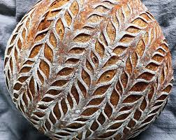

Denzel's Bakery of Treats
“Denzel discovered his love for baking at the tender age of 10 when he baked his first batch of chocolate chip cookies with his grandmother.
The joy of creating something delicious from scratch enthralled him.
Over the years, he honed his skills by experimenting with various recipes and even creating some of his own.
His dream is to share the joy of baking with others and inspire them to create their own baked wonders.”
Almond Croissants

A delicate pastry filled with the sweet nutty goodness of almond paste, dusted with powdered sugar, and baked to a golden perfection.
Ingredients:
- 1 sheet of puff pastry
- 1/2 cup of almond paste
- 1/4 cup of powdered sugar
- 1 egg (for egg wash)
Instructions:
- First, preheat the oven to 375°F.
- Next, roll out the puff pastry and cut it into triangles.
- Spread a thin layer of almond paste on each triangle.
- Then, roll each triangle from the base to the tip and curve into a crescent shape.
- Finally, brush with egg wash and sprinkle with powdered sugar, and bake for 15-20 minutes until it is golden brown.
Sourdough Bread

A community favorite, boasting a crusty exterior and a soft, airy interior, embodying the classic sourdough charm.
Ingredients:
- 1 cup sourdough starter
- 1 1/2 cups warm water
- 4 cups bread flour
- 1 1/2 teaspoons salt
Instructions:
- First, mix the starter, water, and 3 cups of flour in a large bowl. This should create a sticky dough.
- Next, add salt, and remaining flour 1 tablespoon at a time until they are fully incorporated.
- Then, knead the dough on a floured surface for about 15 minutes.
- Once the kneading is done, place the dough in a lightly greased bowl, cover it, and let it rise for about 5 hours.
- Finally, shape the dough into a loaf, and let it rest for 30 minutes.
- When you are ready to bake, preheat your oven to 450°F and bake for about 30 minutes until it's golden brown.
Carrot Cake

A homage to tradition and familial bonds, enriched with the natural sweetness of carrots and a crunch of walnuts, it holds a special place in his heart as it was his late grandfather's favorite. Every year on his grandfather's birthday, Denzel bakes this cake to honor his memory and the bond they shared over the love of baking.
Ingredients:
- 2 cups all-purpose flour
- 2 cups granulated sugar
- 1 teaspoon baking soda
- 2 teaspoons cinnamon
- 1/2 teaspoon salt
- 1 cup vegetable oil
- 4 large eggs
- 2 cups grated carrots
- 1 cup crushed pineapple
- 1/2 cup chopped walnuts
Instructions:
- First, preheat the oven to 350°F.
- Next, mix together the flour, sugar, baking soda, cinnamon, and salt in a large bowl.
- Then, stir in the oil and eggs until smooth.
- Fold in the carrots, pineapple, and walnuts and then pour the batter into a greased baking pan and bake for 30-35 minutes.
- Make sure you allow the cake to cool before frosting with cream cheese frosting.
Baking Tips
- Always double check your ingredient measurments, it is important for them to be accurate.
- Before starting, make sure your eggs and butter are at room temperature.
- Rotate the baking tray halfway through the baking time for an even bake and to prevent unequal rising.
Review's From the Community!
“Denzel's sourdough is the best in town. It has the perfect crust and is always so fresh!” - Tina
“The almond croissants are a little bite of heaven. I can't get enough.” - Jordan
How to Reach Denzel:
denzelstreats@gmail.com
linkedin.com/in/denzel-baker
instagram.com/denzelstreats
facebook.com/DenzelsBakery
practice